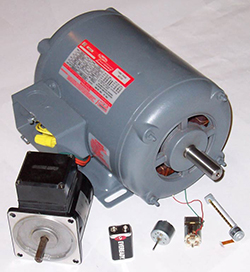
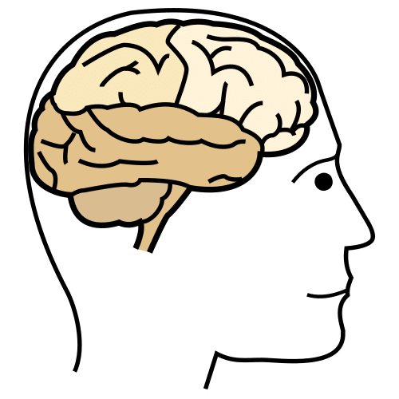
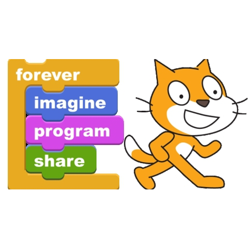
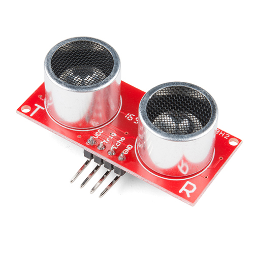
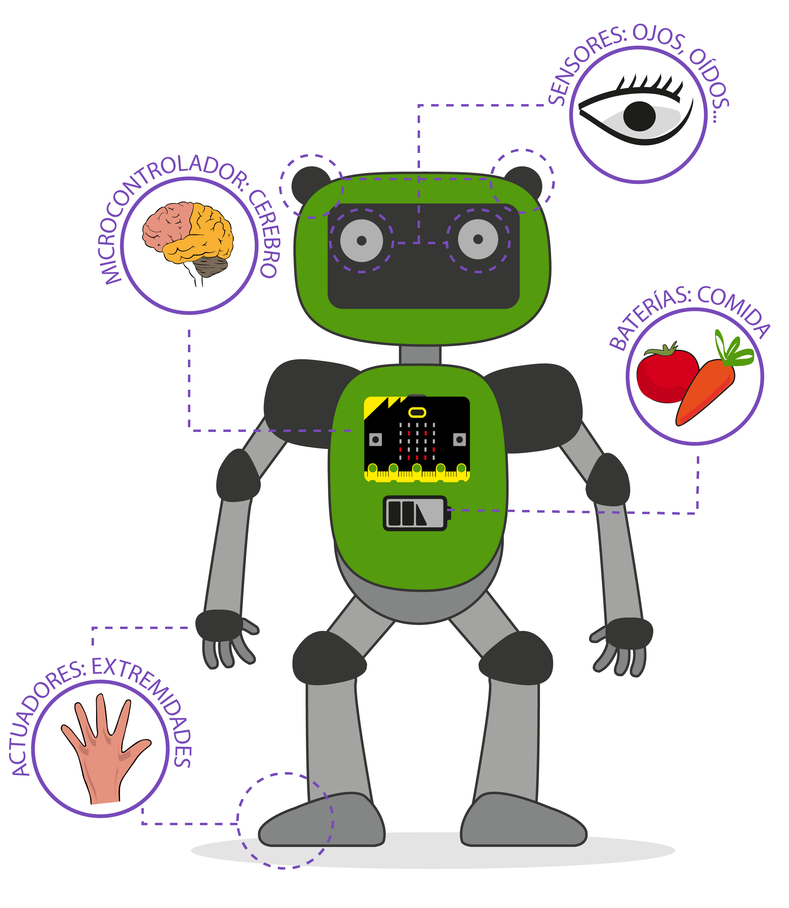
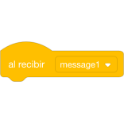
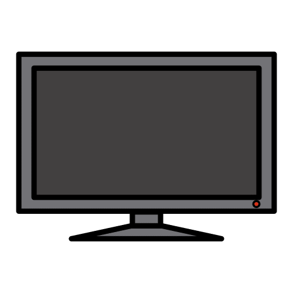
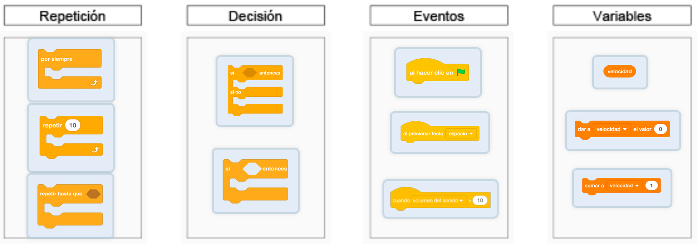

Diccionario
Actuadores

Entrada

Evento

Procesar

Salida
 Definición
Definición
Scratch

Sensores

 Antes de comenzar a ver cosas nuevas vamos a recordar qué sabemos ya sobre los robots.
Antes de comenzar a ver cosas nuevas vamos a recordar qué sabemos ya sobre los robots.
Seguro que te sorprendes de la cantidad de cosas que ya conoces sobre cómo funcionan.
1. ¿Qué crees que es un robot?
Comparte con tu compañero y/o compañera la idea que tienes sobre qué es un robot.
- ¿Qué elementos crees que tienen?
- ¿Qué los diferencian de otros tipos de máquinas?
- ¿Qué utilidades tienen?
2. ¿Cómo crees que sienten los robots?
Veamos primero cómo sentimos los humanos.
Imagina que alguien de la clase te da un pellizco.
a) En pareja tenéis que explicar a los demás:
- Qué ocurre antes del pellizco.
- Qué ocurre mientras te dan el pellizco.
- Qué ocurre después del pellizco.
b) Dibuja un esquema que explique lo ocurrido.
Motus dice ¿Cuánto saben tus compañeros o compañeras?
En esta actividad en grupo te proponemos que intentes darte cuenta de todo lo que tu equipo sabe sobre este tema.
Cuando trabajamos en grupo aprendemos también en equipo. Hay compañeros que recuerdan muchas cosas, otras que hablan muy bien, otros que son muy habilidosos con las manos o con los pies, otras dibujan estupendamente…
Todos tenemos superpoderes para resolver las actividades, pero cuando los unimos, aprendemos juntos y somos capaces de resolver cualquier desafío.
Por ello es importante que en tu equipo sigáis estos consejos:
- Todo lo que una persona sabe lo comparte con los demás.
- Colaboramos en las tareas para que el equipo funcione.
- Valoramos los superpoderes de cada persona.
- Respetamos lo que cada persona ofrece al equipo.
3. Analogía entre un robot y el cuerpo humano.

Realiza el ejercicio en pareja. Si pensamos en nuestro cuerpo como si fuera un robot:
- ¿Cuáles serían nuestros sensores?
- ¿Cuáles serían nuestros actuadores?
- ¿Con qué procesamos la información?
- ¿Con qué órgano almacenamos información?
- ¿Cómo transmitimos la información?
 Definición:
Definición:
Del verbo procesar. Realizar una serie de operaciones con unos datos.
Ejemplo:
El cerebro procesa la información a gran velocidad.
 Definición:
Definición:
Plural de actuador. Es un dispositivo capaz de transformar energía eléctrica en movimiento, luz o sonido.
Ejemplo:
Un motor eléctrico es un actuador que transforma energía eléctrica en energía mecánica.
 Definición:
Definición:
Plural de sensor. Es un dispositivo que tiene la capacidad de detectar movimientos, ruidos, presión, luces...
Ejemplo:
Cuando entramos en un baño el detector de presencia, que es un sensor de distancia, permite que se encienda la luz.
Lumen dice ¿Necesitas ayuda para realizar el ejercicio?
4. Comprobación analogía robot-humano
 Ahora que has experimentado cómo reaccionas ante un estímulo, quizás podrías preguntarte...¿los aparatos digitales también son capaces de sentir?
Ahora que has experimentado cómo reaccionas ante un estímulo, quizás podrías preguntarte...¿los aparatos digitales también son capaces de sentir?
Aunque quizás no hayas sido consciente ya lo habías hecho en proyectos en Scratch. Vamos a hacer un ejemplo con Scratch para demostrarlo.
 Definición:
Definición:
Es un lenguaje de programación basado en bloques, que nos permite crear juegos y animaciones.
Ejemplo:
He creado un juego con Scratch programando mediante bloques.
5. Detecta y actúa con Scratch
En pareja realiza un proyecto con Scratch en el que se envíe información al ordenador, este la procese y dé una respuesta.
- Elige una entrada usando un evento o los bloques “sensores”.
- El ordenador procesa la información de la entrada con el programa que hemos realizado.
- Finalmente, realiza una actuación mostrando la información mediante una salida.
 Definición:
Definición:
Componente que proporciona información a un sistema informático.
Ejemplo:
El ratón y el teclado son entradas de un ordenador.

Es un suceso, puede ser previsto o imprevisto.
Ejemplo:
En Scratch las acciones se inician por eventos.

Componente que muestra la información en un sistema informático.
Ejemplo:
La pantalla es un componente de salida en un ordenador.
Lumen dice ¿Necesitas ayuda?
Si no sabes qué hacer puedes revisar este ejemplo: al pulsar la tecla espacio el gato anda.
En este ejemplo la entrada es la tecla espacio y la salida es la animación del movimiento del gato en la pantalla del ordenador.
Enlace al proyecto Scratch: por si quieres ver cómo está hecho.
¿Cuál ha sido tu entrada y salida?
¡Compártela con tu clase!
6. Clasifica los bloques de Scratch
¿Para qué sirven los siguientes bloques de programación de Scratch? ¿Puedes clasificarlos?
Mueve los bloques y suéltalos en la categoría correcta.
Lumen dice ¿Necesitas ayuda para clasificar los bloques de Scratch?
{kind=link}

7. Reviso lo que aprendo
Una vez realizadas las actividades, estaría bien que reflexiones sobre cuáles han sido tus habilidades y limitaciones en esta tarea. Saber identificarlas, nos ayuda a conocernos mejor a nosotros mismos y es una buena estrategia para saber enfrentarnos a las tareas:
- ¿Has recordado cómo percibimos los humanos la realidad? ¿Cuáles son nuestros “sensores” y “actuadores”?
- ¿Recordabas para qué sirven los principales bloques de Scratch?
- ¿Has sabido realizar un proyecto de Scratch con una entrada y una salida?
- ¿Sabías clasificar los bloques de Scratch?